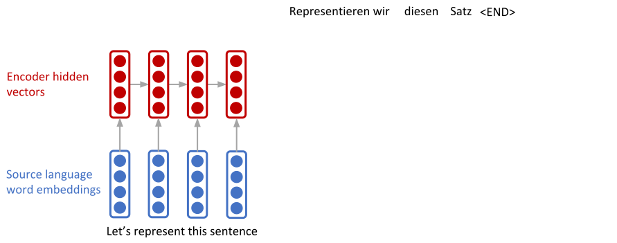

<h1> Neural Networks and Machine Learning </h1> <h2> Week 9: Attention and Language Processing</h2> ### Instructors: Emre Neftci and Sameer Singh <center>https://canvas.eee.uci.edu/courses/21750</center> <center>http://tinyurl.com/nmi-lab-appointments</center> [](?print-pdf)
<h2> Last Goody of the Quarter</h2> <ul> <li/> Load and save models <pre><code class="Python" data-trim data-noescape> # Save network torch.save(network.state_dict(), 'network.torch') # Load network network.load.state_dict(torch.load('network.pytorch')) </code></pre> </ul>
<h2> Recurrent Neural Networks in Deep Learning </h2> <img src="img/RNN-unrolled.png" /> <ul> <li/> RNNs can be unfolded to form a deep neural network <li/> The depth along the unfolded dimension is equal to the number of time steps. <li/> An output can be produced at some or every time steps. <li/> Depending on the output structure, different problems can be solved </ul>
<h2> Example Tasks</h2> <img src="img/rnn_tasks.jpeg" /> <ul> <li class="fragment"/> Today: Sequence-to-sequence models for text-like data </ul>
<h2> Word embeddings</h2> <ul> <li /> Words can be represented as an <i>integer</i>, one for each word in a vocabularny <pre> Let's represent this sequence 23 450 27 124 </pre> <li /> The vocabulary size is the number of words we can represent. Typical sizes are 30000 <li class=fragment /> A word is like one category among 30000 possibilities. I.e. it is a very sparse space and not practical to work in it. <li class=fragment /> Word embeddings are mappings that map a word into a real vector space of of smaller dimension (typicaly $\mathbb{R}^{256}$). <pre> Let's represent this sequence 0.3 1.3 0.1 1.3 -0.5 2.3 5.5 -2.5 ... ... ... ... 1.6 0.0 -3.2 8.2 </pre> <li class=fragment /> Various techniques exist to learn this function (see second part of this class), let's assume this mapping exists </ul>
<h2> Sequence-to-sequence Task</h2> <ul> <li/> Embed words: </ul> <p class=ref><a href=https://arxiv.org/pdf/1406.1078v3.pdf> Cho et al. 2014 </a>
<h2> Sequence-to-sequence Task</h2> <ul> <li/> Translate English to German, for example: </ul>
<h2> Sequence-to-sequence Task</h2> <ul> <li/> Encode sequence, <i>e.g</i> using an LSTM: </ul> 
<h2> Sequence-to-sequence Task</h2> <ul> <li/> Decode sentences </ul>
<h2> Sequence-to-sequence Task</h2> <ul> <li/> There is a problem in this network </ul>
<h2> The Vanishing Gradients Problem</h2> <p>Remember the temporal credit assignment problem</p> <ul> <li /> Short-term dependencies <img src="img/RNN-shorttermdepdencies.png" class=small /> <li /> Long-term dependencies <img src="img/RNN-longtermdependencies.png" class=small /> <p class=ref>https://colah.github.io/posts/2015-08-Understanding-LSTMs/</p> </ul> </div>
<h2> Sequence-to-sequence Task</h2> <ul> <li/> In addition to the vanishing gradient, the final encoded vector must encode the entire sentence <li /> While this is OK for classification (and even desirable), it is not appropriate for generating sequences. </ul>
<h2> Long-Short Term Memory</h2> <img src="img/LSTM3-chain.png" /> <p class=ref>https://colah.github.io/posts/2015-08-Understanding-LSTMs/</p> <ul> <li />The top horizontal line is the memory state, $C_t$ <li/> Let's go over the steps one by one </ul>
<h1> Sequence-to-Sequence Models with Attention</h1>
<h2>Attention: Motivation </h2> <ul> <li /> Provides a solution to the bottleneck problem. <li class=fragment /> Allows the decoder can have direct access to all the hidden states of the encoder. <li class=fragment /> At each step, the decoder can focus on the part of the input sentence that is most relevant. <li class=fragment /> Attention mechanisms are internal transformations with trainable parameters: <em> they can be learned jointly with the rest of the model </em> </ul>
<h2> Sequence-to-sequence Task With Attention</h2> <ul> <li/> Generate 1st decoder hidden vector as before. </ul>
<h2> Sequence-to-sequence Task</h2> <ul> <li/> Calculate a similarity score between the decoder hidden vector and all the encoder hidden vectors. <li /> Encoder hidden states $\mathbf{h} = h_1, ..., h_N \in \mathbb{R}^h$ </ul>
<h2> Sequence-to-sequence Task</h2> <ul> <li/> Calculate a similarity score between the decoder hidden vector and all the encoder hidden vectors. <li /> Decoder states $s_t \in \mathbb{R}^h$ <li /> Similarity scores (alignment) $e_t = [s_t^\top h_1, ..., s_t^\top h_N] \in \mathbb{R}^N$ </ul>
<h2> Sequence-to-sequence Task</h2> <ul> <li/> Pass similarity score vector through a softmax to generate attention weights. <li /> Attention weights $\alpha_t = softmax(e_t) \in \mathbb{R}^N$ </ul>
<h2> Sequence-to-sequence Task</h2> <ul> <li/> Use the attention weights to generate the context vector by taking a weighted sum of the encoder hidden vectors. <li /> Context vector is a weighted sum of the encoder states $a_t = \alpha_t \cdot \mathbf{h} \in \mathbb{R}^h$ </ul>
<h2> Sequence-to-sequence Task</h2> <ul> <li />Concatenate the context vector to the decoder hidden vector and generate the first word. </ul>
<h2> Sequence-to-sequence Task</h2> <ul> <li />And Proceed as before </ul>
<h2> Sequence-to-sequence Task</h2> <ul> <li />Translation is complete when the END token is generated <li /> Concatenate $a_t$ and decoder state $s_t$ together and train as in the non-attention model </ul>
<h2> Attention: Interpretation </h2> <ul> <li /> Alignments found. Each pixel shows the weight $\alpha_{ij}$ of the ith source word for the jth target word <p class=ref>Bahdenau et al. 2015</p> <li /> Concatenate $a_t$ and decoder state $s_t$ together and train as in the non-attention model </ul>
<h2> Attention: A more general definition</h2> <ul> <li/>Definition: Given a set of <b>value vectors</b> (encoded state $h_t$) and a <b>query vector</b> (decoded state, $s_t$), attention is a technique to compute a weighted sum of the values, dependent on the query, using an attention function. <li/> The weighted sum is a selective summary of the information contained in the values, where the query determines which values to focus on. <li />There is a number of attention functions that are commonly used. <ul> <li /> Dot product attention: $$e_{ij} = \mathbf{s}^\top_j \mathbf{h}_i \in \mathbb{R}$$ <li /> Luong et al. 2015: $$e_{ij} = \mathbf{s}^\top_j W \mathbf{h}_i \in \mathbb{R}$$ <li /> Bahdenau et al. 2015: $$e_{ij} = V^\top \tanh(W_s \mathbf{s}_j + W_h \mathbf{h}_i) \in \mathbb{R}$$ </ul>
<h2> Stacked Attention </h2>
<h2> Seq2Seq with Attention Tutorial (PyTorch) </h2> <img src="https://pytorch.org/tutorials/_images/seq2seq.png" class=large /> [](https://drive.google.com/open?id=1tThcNewnf1ChK36luba1IeTgxXnLhxgL)